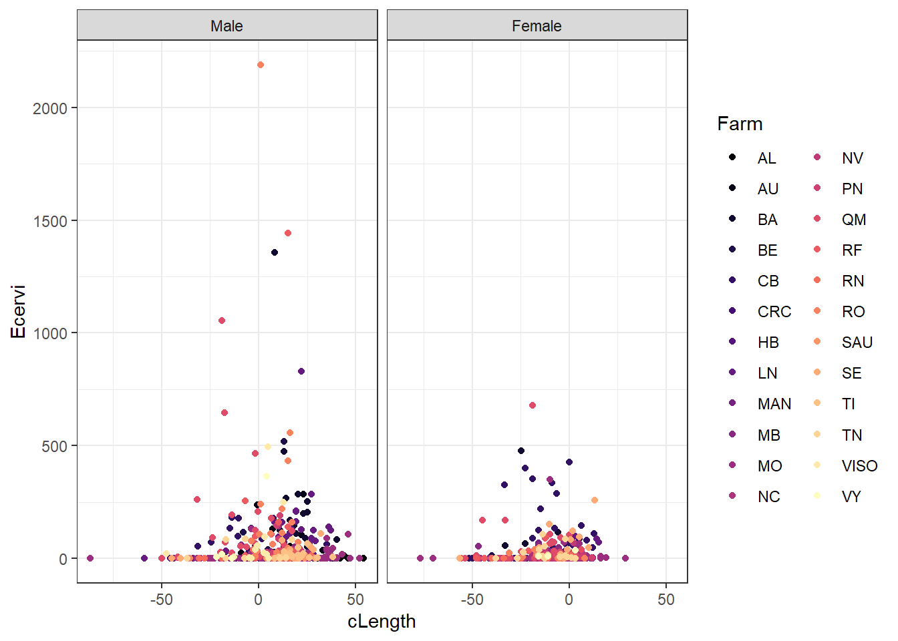
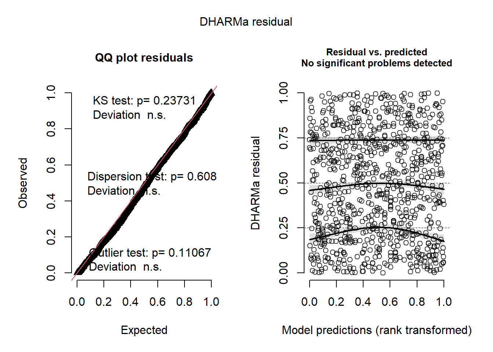
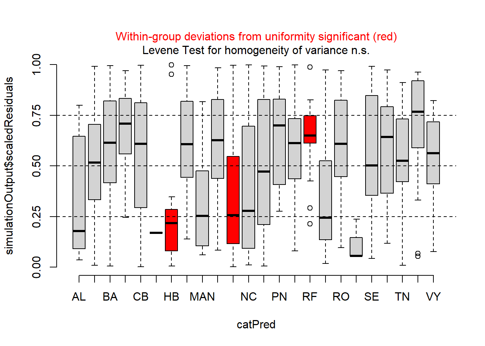
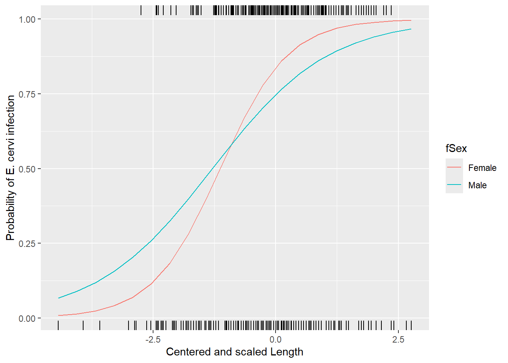
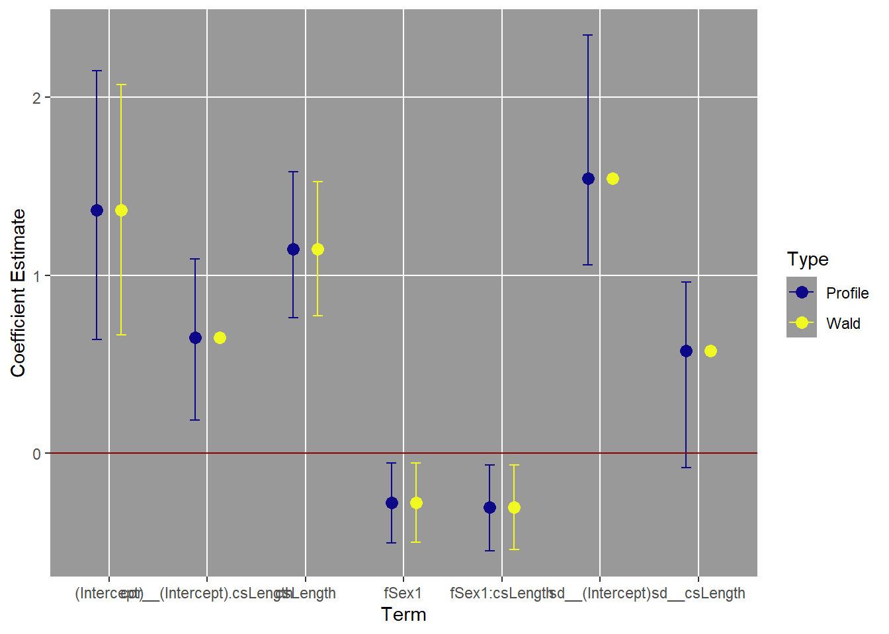
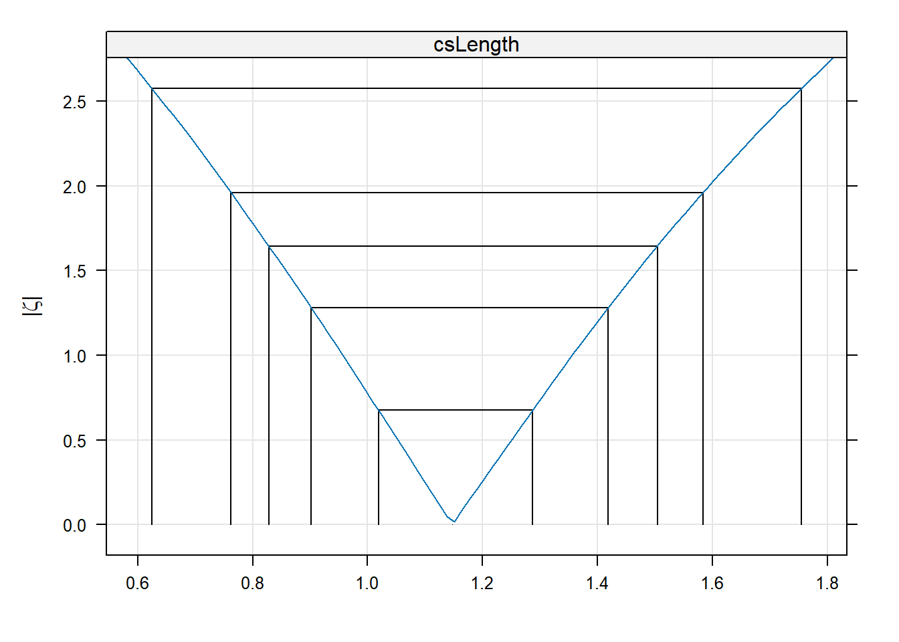

Generalized Linear Mixed Models
Assigned Reading:
- Harrison XA, Donaldson L, Correa-Cano ME, Evans J, Fisher DN, Goodwin CED, Robinson BS, Hodgson DJ, Inger R. 2018. A brief introduction to mixed effects modelling and multi-model inference in ecology. PeerJ 6:e4794 https://doi.org/10.7717/peerj.4794.
- Oberpriller, J., de Souza Leite, M., & Pichler, M. (2022). Fixed or random? On the reliability of mixed‐effects models for a small number of levels in grouping variables. Ecology and Evolution, 12(7), e9062.
Overview
To learn about generalized linear mixed models, we will use data from the data are from Vicente et al. (2005) who looked at the distribution and faecal shedding patterns of 1st stage larvae of Elaphostrongylus cervi in red deer. Here we’re interested in the presence and absence of larvae in deer as functions of size (length in cm), sex, and farm identity. The study was done near Cuidad Real in Spain. Here’s a nice pic of red deer at Cabañeros National Park in Spain, which is near Ciudad Real (and Don Quixote territory):

# List of packages necessary to run this script:
require(librarian, quietly = TRUE)
shelf(tidyverse,
performance, # For checking model convergence
MuMIn, # for model selection
lme4, # For mixed modeling
# pander,
lattice,
broom.mixed,
DHARMa, # For mixed model diagnostics
lib = tempdir(),
quiet = TRUE)
# Set the web address where R will look for files from this repository
# Do not change this address
repo_url <- "https://raw.githubusercontent.com/LivingLandscapes/Course_EcologicalModeling/master/"
# Load data
ecervi <-
read.table(paste0(repo_url, "/data/DeerEcervi.txt"),
header = TRUE)Data Exploration
On your own, familiarize yourself with the data. One critical data exploration points: the average number of larvae in a fecal sample is highly skewed to the right – many zeros but also some very large values.

The response variable is continuous, so we need to do some data manipulation in order to get presence/absence data. This is one way to handle highly skewed data like this. While we’re doing that, we’ll make sure sex is categorical and center the length variable to improve convergence, and make the intercept directly interpretable as the probability of presence for an average size deer.
# Convert E cervi abundance to presence/absence (1 , 0), create a factor for
# sex, and center the length variable by subtracting the mean.
ecervi <-
ecervi %>%
mutate(Ecervi.pa = Ecervi > 0,
fSex = factor(Sex, labels = c("Male", "Female")),
cLength = Length - mean(Length))
# Plot the potential relationship between cLength and E cervi abundance
ggplot(ecervi,
aes(x = cLength,
y = Ecervi,
color = Farm)) +
scale_color_viridis_d(option = "magma") +
geom_point() +
facet_wrap( ~ fSex) +
theme_bw()
One issue that can affect a binomial model is called “complete separation”. This arises when one predictor is a “perfect” predictor of presence or absence. There is a value above which there are only presences and below which there are only absences. The plot above suggests that won’t be an issue with our fixed effects, but there could be farms that are perfectly affected or unaffected.
# Check if there is danger of "complete separation". If there are farms without
# any E cervi, that could be a problem.
with(ecervi,
table(Farm, Ecervi.pa))## Ecervi.pa
## Farm FALSE TRUE
## AL 9 6
## AU 4 28
## BA 9 41
## BE 0 13
## CB 26 59
## CRC 1 0
## HB 15 2
## LN 3 30
## MAN 16 11
## MB 4 30
## MO 127 82
## NC 14 13
## NV 9 11
## PN 3 34
## QM 12 48
## RF 2 18
## RN 16 7
## RO 2 28
## SAU 3 0
## SE 6 20
## TI 1 18
## TN 7 18
## VISO 2 11
## VY 1 6There are 3 farms with either all positive or all negative observations. We won’t worry about that for now, but we will want to look for problems with that later.
Questing for the global GLMM
As always, start with a global model to check residuals. The global model here has the interaction of sex and length. We clearly have a repeated measures design, so we will start with a mixed model using Farm as the random effect. It is also possible that the effects of sex and length could vary by farm.
# Global model: Take 1
M0 <- glmer(Ecervi.pa ~ fSex * cLength + (1 + fSex * cLength | Farm),
data = ecervi,
family = binomial)
summary(M0)## Generalized linear mixed model fit by maximum likelihood (Laplace
## Approximation) [glmerMod]
## Family: binomial ( logit )
## Formula: Ecervi.pa ~ fSex * cLength + (1 + fSex * cLength | Farm)
## Data: ecervi
##
## AIC BIC logLik deviance df.resid
## 841.9 907.9 -406.9 813.9 812
##
## Scaled residuals:
## Min 1Q Median 3Q Max
## -5.7920 -0.5973 0.2499 0.4944 3.1072
##
## Random effects:
## Groups Name Variance Std.Dev. Corr
## Farm (Intercept) 2.163520 1.47089
## fSexFemale 0.228873 0.47841 -0.05
## cLength 0.001641 0.04051 0.58 0.09
## fSexFemale:cLength 0.001296 0.03600 -0.47 0.66 -0.69
## Number of obs: 826, groups: Farm, 24
##
## Fixed effects:
## Estimate Std. Error z value Pr(>|z|)
## (Intercept) 1.08708 0.35721 3.043 0.00234 **
## fSexFemale 0.65104 0.33614 1.937 0.05277 .
## cLength 0.04372 0.01329 3.289 0.00100 **
## fSexFemale:cLength 0.03521 0.01783 1.975 0.04827 *
## ---
## Signif. codes: 0 '***' 0.001 '**' 0.01 '*' 0.05 '.' 0.1 ' ' 1
##
## Correlation of Fixed Effects:
## (Intr) fSxFml cLngth
## fSexFemale -0.245
## cLength 0.325 0.035
## fSxFml:cLng -0.190 0.526 -0.578
## optimizer (Nelder_Mead) convergence code: 0 (OK)
## boundary (singular) fit: see help('isSingular')That model fails to converge. Asking for the sex by length interaction to vary among farms is probably too much given there are some farms with relatively few observations. Looking at the summary, especially the random effects estimates, it is clear that the scaling between Sex and Length is very different. A 1 cm change in length is a much smaller change than a change from male to female. This kind of discrepancy can make it harder for a model to converge. If I rescale ‘Length’ by dividing through with the standard deviation the coefficients for those two variables will be closer, and this can help with convergence. I will also change the contrasts on Sex to “sum to zero” contrasts, which has a similar beneficial effect to centering a continuous variable.
# Divide length by its standard deviation
ecervi <-
ecervi %>%
mutate(csLength = cLength / sd(Length))
# "Center" the random effect of sex
contrasts(ecervi$fSex) <- contr.sum(2)
# Global model: Take 2
M0 <- glmer(Ecervi.pa ~ fSex * csLength + (1 + fSex * csLength | Farm),
data = ecervi,
family = binomial)
# summary(M0)Still fails to converge. OK, let’s try the next simplest model, leaving out the interaction in the random effect.
# Global model: Take 3
M0 <- glmer(Ecervi.pa ~ fSex * csLength + (1 + fSex + csLength | Farm),
data = ecervi,
family = binomial)
# summary(M0)That model also fails to converge! Let’s check the two simpler models that allow fSex or csLength to vary across farms.
# Simplified models:
M0_LF <-
glmer(Ecervi.pa ~ fSex * csLength + (1 + csLength | Farm),
data = ecervi,
family = binomial)
M0_SF <-
glmer(Ecervi.pa ~ fSex * csLength + (1 + fSex | Farm),
data = ecervi,
family = binomial)
# # NOTE: So we don't clutter things up, check the summaries on your own.
# summary(M0a)
# summary(M0b)Both of those models converge. Check residuals for both.
# Get residuals with DHARMa: QQ plot and residuals vs. predicted
simulationOutput_LF <-
simulateResiduals(fittedModel = M0_LF, plot = TRUE)
# Plot residuals vs. group--farm in this case
plotResiduals(simulationOutput_LF, form = ecervi$Farm)
The QQ plot, tests, and residuals vs. predicted plots look fine, but there appear to be issues with heteroscedasticity across farms. On your own, check the residuals for the “SF” model, including the ‘Farm’ group. Are there any differences? Which one looks like a better model?
The residuals for the fSex random effect model look OK, but not quite as good as the csLength random effect. This is particularly noticeable in the plots of the residuals vs. fitted and residuals vs. csLength plots.
Model selection
So we have identified the global models and checked that they are adequate. Next we need to make up a set of models and identify the best ones using \(AIC_c\). We can build the set with all possible random effects, and all possible fixed effects models. The number of variables is small, so this will be a reasonable thing to do–at least for the purposes of this lab…
Some models may not have failed to converge. Use the handy “check_convergence” function in the “performance” package to check the list:
Now we’re ready to see which models are the best, keeping a wary eye out for the model(s) that did not converge…
On your own, interpret the model selection table. Which model or models should we use going forward?
Critically, one difference from the “regular” linear mixed model with
normal error distributions is that we don’t have to switch off REML
estimation to compare models with different fixed effects.
glmer() is already using maximum likelihood for
everything.
For simplicity’s sake, let’s go ahead and use the top model:
topmod <- fits$`Ecervi.pa ~ fSex * csLength+(1 + csLength | Farm)`
# summary(fits$`Ecervi.pa ~ fSex * csLength+(1 + csLength | Farm)`)Next we want to make some plots of the effects so we can interpret
what is going on. First we’ll create some new data and go from there as
we have in the past. The additional wrinkle is that we have to think
about what we want predict to do with the random effects. The first
option is to look at the “population average” response, which we do by
setting re.form=~0.
# Get range of 'csLength' values
lr = range(ecervi$csLength)
# Create new data.frame for predictions
nd <- expand.grid(csLength = seq(lr[1], lr[2], length = 20),
fSex = factor(levels(ecervi$fSex)))
# Unconditional prediction
nd$pp <-
predict(topmod,
newdata = nd,
type = "response", # No need for plogis. Why?
re.form = ~ 0)
# Plot unconditional prediction
ggplot(nd, aes(x=csLength, y=pp, col=fSex)) +
geom_line() +
xlab("Centered and scaled Length") +
ylab("Probability of E. cervi infection") +
geom_rug(aes(x=csLength), data=filter(ecervi, Ecervi.pa),sides="t", inherit.aes = FALSE) +
geom_rug(aes(x=csLength), data=filter(ecervi, !Ecervi.pa),sides="b", inherit.aes = FALSE)
These lines represent the effect of length and sex for a typical farm.
Now, here’s an interesting challenge: On your own:
- Repeat the model selection process for fixed effects using
glm(), i.e. ignoring the correlation within farms. - Compare and contrast the results that you get, both the magnitude and direction of the coefficients, as well as their relative standard errors.
Inference with mixed models
Bootstrapping
There is a significant and on-going debate about how best to do
inference with this sort of model. One way around the debate is to use
parametric bootstrapping to estimate things like the standard errors of
the predictions and confidence intervals on the coefficients.
lme4 has a pre-made function to get confidence intervals on
the coefficients. WARNING this line of code will take > 20
minutes to run. Forget about these unless you’ve got a lot of time.
# Returns a matrix with estimates plus confidence intervals for all fixed and
# random effects parameters. NOTE: you can reduce the number of simulations to
# speed it up.
topmod.CI <- confint(topmod, method = "boot", oldNames = FALSE)
topmod.CIThis function draws random samples of the random effects and the i.i.d. errors, generates a simulated response based on those error values, and then re-estimates the model. The confidence limits are based on the quantiles of the distribution of parameter estimates generated from 500 simulations. If fitting the original model takes a couple seconds, this routine will take 500 times as long to complete! You will also probably see warnings about convergence failures – all this reminds us that we’re out on the bleeding edge of computational statistics here.
Profile and Wald intervals
Profile intervals are also good, slow, but not as bad as bootstrap.
# profile limits
topmod.profCI <-
as.data.frame(confint(topmod, method = "profile", oldNames = FALSE))
# Wald limits
topmod.WaldCI <-
as.data.frame(confint(topmod, method = "Wald", oldNames = FALSE))
# get rid of rownames
rownames(topmod.profCI) <- NULL
rownames(topmod.WaldCI) <- NULL
# and change names to include type of CI
names(topmod.profCI) <- c("Profile_CI2.5", "Profile_CI97.5")
names(topmod.WaldCI) <- c("Wald_CI2.5", "Wald_CI97.5")
# Get the coefficients from the top model, add the Wald and profile intervals,
# do some data manipulation to prepare for ggplot.
topmod.CI <-
broom.mixed::tidy(topmod) %>% # add the profile intervals -- confint() uses a different order from tidy()
cbind(topmod.profCI[c(4:7,1,3,2),],
topmod.WaldCI[c(4:7,1,3,2),]) %>%
dplyr::select(c(term, estimate, Profile_CI2.5,
Profile_CI97.5, Wald_CI2.5, Wald_CI97.5)) %>%
pivot_longer(Profile_CI2.5:Wald_CI97.5) %>%
separate_wider_delim(cols = "name",
delim = "_",
names = c("type", "level")) %>%
rename(Estimate = estimate, Type = type, Term = term) %>%
pivot_wider(id_cols = c(Term, Estimate, Type),
names_from = level,
values_from = value)
# Plot the profile and Wald confidence intervals on coefficients.
ggplot(topmod.CI,
aes(x = Term,
y = Estimate,
color = Type)) +
scale_color_viridis_d(option = "plasma") +
geom_point(position = position_dodge(width = 0.5),
size = 3) +
geom_errorbar(aes(ymin = CI2.5,
ymax = CI97.5),
position = position_dodge(width = 0.5),
width = 0.2) +
geom_hline(data = data.frame(yIntercept = 0),
mapping = aes(yintercept = yIntercept),
color = "darkred") +
theme(panel.background = element_rect(fill = "grey60"),
panel.grid.minor = element_blank()) +
xlab("Term") +
ylab("Coefficient Estimate")
It can be hard to see what is going on unless you use the “zoom” to make this plot large enough for the term names to not overlap. So the intervals for the intercept and sex effects are pretty close to the “simple” Wald intervals. The intervals for csLength and the interaction are longer with profile intervals, but at least they still exclude zero. In addition, the profile method gives us intervals on the variance parameters as well.
The reason it is hard to get confidence intervals on predictions is because of the uncertainty in the variance parameters, which can be substantial. The correlation coefficient includes zero, for example. This makes sense, as the 2nd best model was a model that assumed the random effects were uncorrelated.
But what the heck IS a profile limit?
The basic idea is best illustrated with a figure showing how the log-likelihood of a model changes as one of the parameter values is changed.
# get a profile for the fixed effect csLength
lengthProf <- profile(topmod, which="csLength")
xyplot(lengthProf, absVal=TRUE)
The x-axis on that figure are values of the coefficient csLength. The y-axis is a measure of the change in deviance as the coefficient is moved away from the maximum likelihood estimate (the peak at the bottom). The vertical and horizontal lines indicate 50%, 80%, 90%, 95%, and 99% confidence intervals. As the parameter value moves away from the MLE, the model’s log-likehood gets worse. Particular points along that profile correspond to different critical points on chisquare distribution with one degree of freedom.